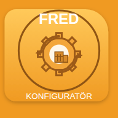

Fred
Fras-EDitor – dokument från mallar, helt i webbläsaren.

Fred KonfiguratörBygg och underhåll mallar, parametrar och organisationer. För administratörer.Installera på iPad: öppna appen i Safari, tryck på delningsikonen och välj Lägg till på hemskärmen. Appen får en egen ikon, öppnas i fullskärm och fungerar även utan internetanslutning.